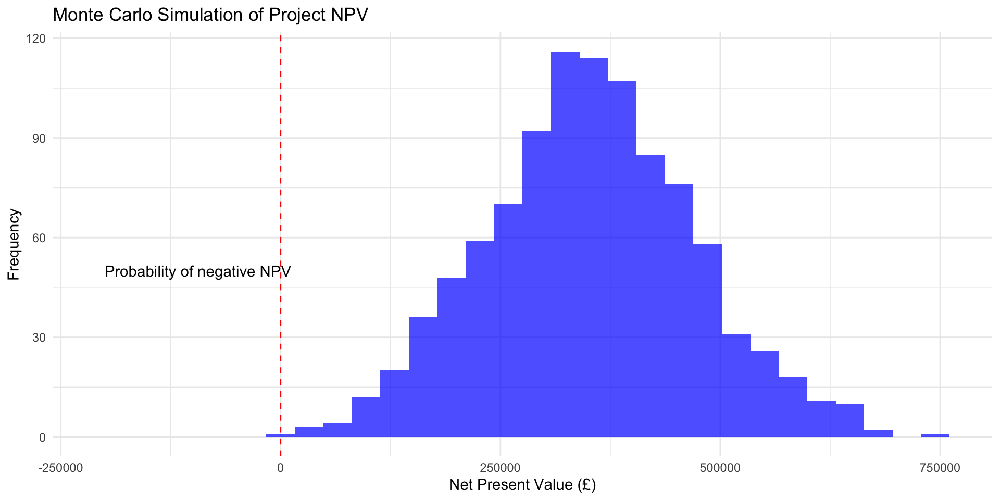

flowchart TD
A[Identify investment opportunity] --> B[Gather relevant information]
B --> C[Evaluate using appraisal techniques]
C --> D[Consider risk factors]
D --> E[Make investment decision]
E --> F[Implement and monitor]
F --> G[Post-implementation review]
Corporate Financial Management
Day 1 Afternoon: Capital Investment Decisions
Barry Quinn
2025-05-15
Capital Investment Decision-Making
This afternoon, we build upon the financial framework and ratio analysis covered this morning to focus on one of the most critical aspects of financial management: capital investment decisions.
Learning Outcomes for This Session
By the end of this afternoon, you will be able to:
- Explain the nature and importance of investment decision-making
- Identify and evaluate the five main investment appraisal methods found in practice
- Use these methods to reach decisions on investment opportunities
- Explain the key stages in the investment decision-making process
- Apply techniques to handle risk in investment decisions
The Nature of Investment Decisions
Investment decisions represent long-term commitments of substantial resources with uncertain returns. They are among the most consequential decisions finance managers must make.
Capital investment decisions typically involve:
- Large amounts of resources
- Relatively long timescales
- Difficulty or expense in reversing the investment once undertaken
- Strategic implications for the organisation’s future direction
- Complex risk considerations
The pharmaceutical industry provides a classic example of the capital investment decision challenge:
- Initial R&D investment: £500m+
- Development timeline: 10-15 years
- Success rate: Only 1 in 10 compounds receives regulatory approval
- Strategic importance: Defines company product pipeline for decades
- High uncertainty: Market conditions may change substantially before launch
Cash Flows vs. Accounting Profits
A fundamental principle in capital investment appraisal is the focus on cash flows rather than accounting profits.
Key Equation: \[\text{Cash Flow} = \text{Profit} + \text{Depreciation} + \text{Other non-cash adjustments}\]
Why Focus on Cash Flows? - Cash is objective and measurable - Profits are subject to accounting policies - Cash flow timing directly impacts value - Investment decisions affect cash balances
Relevant Cash Flows Are: - Incremental (arising directly from the project) - Future (not past/sunk costs) - After-tax
Irrelevant Items Include: - Sunk costs - Non-incremental overhead allocations - Interest payments (captured in discount rate) - Accounting conventions
Common Error
Including already committed (sunk) costs in investment appraisal calculations. Once spent, these costs are irrelevant to the decision to proceed.
Projected Income Statement vs. Cash Flow
Consider how an accounting statement differs from the cash flow perspective:
| £000 | £000 | |
|---|---|---|
| Credit sales revenue | 1,200 | |
| Less Cost of sales: | ||
| Opening inventories | 100 | |
| Add Purchases | 750 | |
| Less Closing inventories | (120) | 730 |
| Gross profit | 470 | |
| Less: | ||
| Credit card discounts | 60 | |
| Rent and rates | 180 | |
| Other costs | 240 | |
| Depreciation of fittings | 140 | 620 |
| Profit for the period | (150) |
Key Cash Flow Conversion
Income statement to cash flow adjustments: - Add back non-cash expenses (e.g., depreciation: +£140,000) - Adjust for working capital changes (e.g., inventory increase: -£20,000) - Exclude financing costs (captured in the discount rate)
Investment Appraisal Methods Overview
Five main methods are used in practice to evaluate investment projects:
flowchart TD
A[Investment Appraisal Methods] --> B[Discounted Cash Flow Methods]
A --> C[Non-Discounted Cash Flow Methods]
A --> D[Accounting Profit-Based]
B --> E[Net Present Value]
B --> F[Internal Rate of Return]
B --> G[Discounted Payback]
C --> H[Payback Period]
D --> I[Accounting Rate of Return]
Time Value of Money Principle: Future cash flows are worth less than immediate cash flows due to: - Opportunity cost of capital - Inflation - Risk
DCF methods explicitly account for this through discounting.

Payback Period (PP)
The Payback Period is the time required to recover the initial investment from project cash flows.
\[\text{Payback Period} = \text{Time until} \sum_{t=0}^{n} \text{Cash Flow}_t = 0\]
Where: - t = time period (typically years) - n = payback period
Decision Rule: - Accept projects with PP < maximum acceptable period - Between competing projects, prefer shorter payback
A project costs £500,000 with the following expected cash flows:
| Year | Cash Flow (£) | Cumulative Cash Flow (£) |
|---|---|---|
| 0 | -500000 | -500000 |
| 1 | 150000 | -350000 |
| 2 | 180000 | -170000 |
| 3 | 200000 | 30000 |
| 4 | 120000 | 150000 |
| 5 | 100000 | 250000 |
Payback period = 2 + (170,000 ÷ 200,000) = 2.85 years
Advantages: - Simple to calculate and understand - Focuses on liquidity and capital recovery - Provides a crude measure of risk - Popular in practice
Limitations: - Ignores cash flows after the payback period - Fails to consider time value of money - Ignores the scale of investment - Payback threshold typically arbitrary - Not linked to shareholder wealth maximization
Discounted Payback Period (DPP)
The Discounted Payback Period addresses a key limitation of the standard payback by considering the time value of money.
\[\text{Discounted Payback Period} = \text{Time until} \sum_{t=0}^{n} \frac{\text{Cash Flow}_t}{(1+r)^t} = 0\]
Where: - t = time period (typically years) - r = discount rate - n = discounted payback period
Decision Rule: - Accept projects with DPP < maximum acceptable period - Between competing projects, prefer shorter discounted payback
Using the same project with a 10% discount rate:
| Year | Cash Flow (£) | Discount Factor | Discounted CF (£) | Cumulative DCF (£) |
|---|---|---|---|---|
| 0 | -500000 | 1.000 | -500000 | -500000 |
| 1 | 150000 | 0.909 | 136364 | -363636 |
| 2 | 180000 | 0.826 | 148760 | -214876 |
| 3 | 200000 | 0.751 | 150263 | -64613 |
| 4 | 120000 | 0.683 | 81962 | 17349 |
| 5 | 100000 | 0.621 | 62092 | 79441 |
Discounted payback period = 3 + (-16,400 ÷ 81,640) = 3.20 years
Advantages: - Accounts for time value of money (unlike PP) - Maintains simplicity of interpretation - More realistic measure of capital recovery time
Limitations: - Still ignores cash flows after the payback period - Arbitrary threshold for acceptable period - Not directly linked to shareholder wealth maximization
Net Present Value (NPV)
The Net Present Value method is the most theoretically sound approach to investment appraisal, directly linking to shareholder wealth maximization.
\[\text{NPV} = \sum_{t=0}^{n} \frac{\text{Cash Flow}_t}{(1+r)^t}\]
Where: - t = time period (typically years) - r = discount rate (cost of capital) - n = project lifetime
Decision Rule: - Accept projects with NPV > 0 - Reject projects with NPV < 0 - Between competing projects, prefer higher NPV
flowchart LR
A[Risk-free rate] --> D[Required return]
B[Inflation premium] --> D
C[Risk premium] --> D
D --> E[Discount rate for NPV]
The discount rate used in NPV calculations reflects: - Time value of money (risk-free rate) - Inflation expectations - Project-specific risk factors
Using the same project with a 10% discount rate:
| Year | Cash Flow (£) | Discount Factor | Discounted CF (£) |
|---|---|---|---|
| 0 | -500000 | 1.000 | -500000 |
| 1 | 150000 | 0.909 | 136364 |
| 2 | 180000 | 0.826 | 148760 |
| 3 | 200000 | 0.751 | 150263 |
| 4 | 120000 | 0.683 | 81962 |
| 5 | 100000 | 0.621 | 62092 |
NPV = £79,441
Advantages: - Considers all cash flows over project life - Accounts for time value of money - Directly linked to shareholder wealth maximization - Allows for risk adjustment via discount rate - Additive across projects
Limitations: - More complex to calculate and explain - Highly sensitive to discount rate selection - Assumes reinvestment at the discount rate - Provides absolute rather than relative measure
Internal Rate of Return (IRR)
The Internal Rate of Return is the discount rate at which a project’s NPV equals zero, representing the project’s “yield.”
IRR is the value of r that satisfies:
\[\sum_{t=0}^{n} \frac{\text{Cash Flow}_t}{(1+r)^t} = 0\]
Typically solved through iteration or financial calculators.
Decision Rule: - Accept projects with IRR > cost of capital - Reject projects with IRR < cost of capital - Between competing projects, prefer higher IRR
Using the same project cash flows:
| Year | Cash Flow (£) |
|---|---|
| 0 | -500000 |
| 1 | 150000 |
| 2 | 180000 |
| 3 | 200000 |
| 4 | 120000 |
| 5 | 100000 |
IRR = 16.46%
Since IRR (16.46%) > Cost of capital (10%), the project is acceptable.
Advantages: - Intuitive percentage return format - Accounts for time value of money - Considers all cash flows - Popular with practitioners
Limitations: - Multiple IRRs possible with non-conventional cash flows - Scale of investment not considered - Reinvestment assumption may be unrealistic - Ranking conflicts with NPV possible - Not directly linked to shareholder wealth maximization
Accounting Rate of Return (ARR)
The Accounting Rate of Return focuses on accounting profit rather than cash flows.
\[\text{ARR} = \frac{\text{Average annual profit}}{\text{Average investment}} \times 100\%\]
Where: - Average annual profit = Total project profits ÷ Project life - Average investment = (Initial investment + Residual value) ÷ 2
Decision Rule: - Accept projects with ARR > minimum required return - Reject projects with ARR < minimum required return - Between competing projects, prefer higher ARR
A project requires an initial investment of £500,000 with the following profit projections:
| Year | Accounting Profit (£) |
|---|---|
| 1 | 90000 |
| 2 | 110000 |
| 3 | 130000 |
| 4 | 80000 |
| 5 | 70000 |
Average annual profit = £96,000
Average investment = £3e+05
ARR = 32%
Advantages: - Uses familiar accounting concepts - Simple to calculate - Addresses profitability directly - No discounting required
Limitations: - Based on accounting profits, not cash flows - Ignores time value of money - No objective benchmark for minimum ARR - Sensitive to accounting policies - Multiple calculation methods exist
Comparison of Appraisal Methods
The following table summarizes key features of the five investment appraisal methods:
| Method | Considers Time Value | Considers All Cash Flows | Linked to Shareholder Value | Complexity | Format |
|---|---|---|---|---|---|
| Payback Period (PP) | No | No | No | Low | Years |
| Discounted Payback Period (DPP) | Yes | No | No | Medium | Years |
| Net Present Value (NPV) | Yes | Yes | Yes | Medium-High | Currency |
| Internal Rate of Return (IRR) | Yes | Yes | Indirectly | High | Percentage |
| Accounting Rate of Return (ARR) | No | Yes | No | Low | Percentage |
Best Practice
Organizations typically use multiple appraisal methods in combination to gain a more complete perspective on potential investments.
Case Study: Evaluating a New Business Venture
Let’s apply these methods to a real-world case:
Evaluating the Potential of Starting a Plumbing Business
- Business Plan Overview
- Applying PP and DPP
- Calculating NPV and IRR
- Calculating ARR
- Decision Recommendation
The proposal involves:
- Year 0: Initial investment (Equipment: £25,000, Van: £15,000, Advertising: £5,000)
- Years 1-5: Operations (Building customer base, hiring employees)
- End of Year 5: Exit strategy (Sell business for £30,000, equipment value £8,000, van value £3,000)
Expected cash flows: - Year 1: £12,000 - Year 2: £18,000 - Year 3: £22,000 - Year 4: £25,000 - Year 5: £26,000 (plus exit values)
| Year | Cash Flow (£) | Cumulative CF (£) | Discount Factor | Discounted CF (£) | Cumulative DCF (£) |
|---|---|---|---|---|---|
| 0 | -45000 | -45000 | 1.000 | -45000 | -45000 |
| 1 | 12000 | -33000 | 0.909 | 10909 | -34091 |
| 2 | 18000 | -15000 | 0.826 | 14876 | -19215 |
| 3 | 22000 | 7000 | 0.751 | 16529 | -2686 |
| 4 | 25000 | 32000 | 0.683 | 17075 | 14389 |
| 5 | 67000 | 99000 | 0.621 | 41602 | 55991 |
Payback Period: Between Year 2 and 3, approximately 2.18 years.
Discounted Payback Period: Between Year 3 and 4, approximately 3.74 years.
| Metric | Value |
|---|---|
| Net Present Value (NPV) | £ 55,991 |
| Internal Rate of Return (IRR) | 39.74 % |
| Year | Cash Flow (£) | Depreciation (£) | Accounting Profit (£) |
|---|---|---|---|
| 1 | 12000 | 800 | 11200 |
| 2 | 18000 | 800 | 17200 |
| 3 | 22000 | 800 | 21200 |
| 4 | 25000 | 800 | 24200 |
| 5 | 26000 | 800 | 25200 |
| Metric | Value |
|---|---|
| Average Annual Profit | £ 19,800 |
| Average Investment | £ 43,000 |
| ARR | 46 % |
Based on all five appraisal methods, we can make the following assessment:
Payback Period (2.18 years): If the maximum acceptable payback is 3 years, the project is acceptable.
Discounted Payback (3.74 years): If the maximum acceptable discounted payback is 4 years, the project is acceptable.
NPV (£22,977): The positive NPV indicates the project adds value to the business and should be accepted.
IRR (23.92%): If the cost of capital is 10%, the project’s IRR substantially exceeds this threshold and should be accepted.
ARR (16.4%): If the minimum required ARR is 15%, the project is acceptable.
Recommendation: The investment in the plumbing business appears financially viable across all appraisal methods. The positive NPV and high IRR are particularly encouraging indicators of value creation.
Risk in Investment Decisions
Investment decisions inherently involve risk and uncertainty. Several methods exist to incorporate risk assessment into the appraisal process.
flowchart TD
A[Risk Assessment Methods] --> B[Sensitivity Analysis]
A --> C[Scenario Analysis]
A --> D[Risk-Adjusted Discount Rate]
A --> E[Probability-Based Methods]
E --> F[Expected NPV]
E --> G[Monte Carlo Simulation]
A --> H[Real Options Analysis]
Sensitivity analysis examines how changes in key variables affect project outcomes.
Process: 1. Identify key variables (e.g., sales volume, price, costs) 2. Calculate impact of percentage changes in each variable 3. Identify switching points where NPV becomes zero 4. Focus management attention on most sensitive variables
Example: For our plumbing business, how much would each variable need to change to make NPV zero?
| Variable | Base Value | Change for Zero NPV | Interpretation |
|---|---|---|---|
| Initial investment | £45,000 | +51.1% | Low sensitivity |
| Annual cash flows | As projected | -24.0% | Moderate sensitivity |
| Exit value | £41,000 | -56.0% | Low sensitivity |
| Discount rate | 10% | +13.9 percentage points | Low sensitivity |
Scenario analysis evaluates the project under different sets of assumptions.
| Scenario | Annual Growth | Exit Multiple | NPV | IRR |
|---|---|---|---|---|
| Pessimistic | 5% | 1.0x | £3,250 | 12.1% |
| Most likely | 10% | 1.5x | £22,977 | 23.9% |
| Optimistic | 15% | 2.0x | £48,350 | 36.2% |
Expected NPV incorporates probability estimates for different outcomes.
| Scenario | Probability | NPV | Weighted NPV |
|---|---|---|---|
| Pessimistic | 0.25 | £3,250 | £813 |
| Most likely | 0.50 | £22,977 | £11,489 |
| Optimistic | 0.25 | £48,350 | £12,088 |
| Expected value | 1.00 | £24,390 |
Different investors have different risk preferences:
- Risk-averse investors: Require compensation for bearing risk
- Risk-neutral investors: Focus solely on expected values
- Risk-seeking investors: Willing to accept lower expected returns for chance of higher gains
Most corporate decision-makers are risk-averse, which is reflected in: - Use of hurdle rates above the cost of capital - Preference for shorter payback periods - Conservative cash flow projections
Investment Decision Process in Practice
The investment appraisal techniques are part of a broader investment decision-making process:
flowchart TD
A[1. Determine available funds] --> B[2. Identify investment opportunities]
B --> C[3. Initial screening]
C --> D[4. Detailed appraisal]
D --> E[5. Accept/reject decision]
E --> F[6. Implementation]
F --> G[7. Post-implementation review]
Non-Financial Factors
Financial appraisal provides essential input but should be complemented with consideration of:
- Strategic fit with organizational objectives
- Market position and competitive impacts
- Technical feasibility and resource availability
- Environmental, social, and governance factors
- Regulatory compliance requirements
- Organizational capability and change management
Post-Completion Audit
After implementing capital investments, organizations should conduct post-completion audits to:
- Compare actual outcomes with projected performance
- Identify reasons for discrepancies
- Improve future forecasting and decision-making
- Create accountability for projections
- Capture learning for future investments
Best Practice
Research shows that companies conducting systematic post-completion audits achieve: - More accurate future projections - Better investment performance - Improved organizational learning - Enhanced strategic alignment of investments
Key Takeaways
- Investment decisions are among the most consequential in financial management
- Cash flows, not accounting profits, are the basis for sound investment appraisal
- NPV is the most theoretically sound method, directly linked to shareholder value
- Multiple appraisal methods should be used in combination for a complete perspective
- Risk assessment is an essential component of investment decision-making
- The broader organizational and strategic context must be considered alongside financial analysis
- Post-completion audits improve future decision-making
For Tomorrow
Tomorrow morning, we will explore: - Sources of finance - Capital structure decisions - Cost of capital calculation - Working capital management
Please review the applied exercises at the end of chapter 5 in preparation for our practical session.
Additional Resources
Core Reading: - Brealey, R., Myers, S., & Allen, F. (2023). Principles of Corporate Finance (14th ed.), Chapters 5-7 - Arnold, G. (2020). Corporate Financial Management (6th ed.), Chapters 2-4
Online Resources: - Financial Times Market Data - Corporate Finance Institute - NPV Calculator - McKinsey & Company on Capital Investment
Practice Exercises
To consolidate your understanding, attempt these practice problems before tomorrow’s session:
A project requires an initial investment of £200,000 and is expected to generate annual cash flows of £50,000 for 5 years. Calculate the project’s payback period, NPV (using a 12% discount rate), and IRR.
Company A is considering two mutually exclusive projects with the following cash flows:
| Year | Project X (£) | Project Y (£) |
|---|---|---|
| 0 | -300000 | -300000 |
| 1 | 100000 | 250000 |
| 2 | 150000 | 100000 |
| 3 | 150000 | 50000 |
| 4 | 50000 | 25000 |
Using a discount rate of 10%, calculate: - The NPV of each project - The IRR of each project - The payback period of each project - Which project should be selected and why?
- How would your recommendation for question 2 change if:
- The company’s cost of capital increased to 15%?
- The company faced capital rationing and could only invest £200,000?
- Project Y’s Year 1 cash flow was uncertain and could vary by ±20%? ## Real Options in Capital Investment Decisions
Real options analysis recognises that investment decisions often contain embedded options that can significantly impact project value.
flowchart TD
A[Real Options in Investment] --> B[Option to Defer]
A --> C[Option to Expand]
A --> D[Option to Abandon]
A --> E[Option to Contract]
A --> F[Option to Switch]
Real options create value through managerial flexibility to adapt to changing circumstances.
| Option Type | Description | Value Driver |
|---|---|---|
| Defer | Ability to postpone investment | Reduces uncertainty before committing |
| Expand | Opportunity to increase scale | Captures upside potential |
| Abandon | Ability to exit unprofitable projects | Limits downside risk |
| Contract | Option to reduce project scale | Mitigates losses in adverse conditions |
| Switch | Flexibility to change inputs/outputs | Adapts to changing market conditions |
Real options can be valued using:
- Black-Scholes Model - For simple options with clear parameters
- Binomial Lattice - For more complex, multi-stage options
- Monte Carlo Simulation - For highly uncertain, complex situations
A mining company considering a new site can view the investment as a series of options:
- Initial exploration (low cost, creates option to develop)
- Development phase (higher investment, creates option to extract)
- Extraction operations (option to expand/contract based on commodity prices)
- Site closure (abandonment option if prices fall below extraction costs)
Capital Rationing Decision Tree
When facing capital constraints, a structured approach helps maximise value creation.
flowchart TD
A[Capital Rationing Situation] --> B{Soft or Hard?}
B -->|Soft| C[Internal Policy Constraint]
B -->|Hard| D[External Market Constraint]
C --> E[Challenge Constraint]
C --> F[Work Within Constraint]
D --> G[Optimise Within Constraint]
E --> H[NPV Ranking]
F --> I[PI Ranking]
G --> I
I --> J[Mathematical Programming]
\[\text{PI} = \frac{\sum_{t=1}^{n} \frac{\text{Cash Flow}_t}{(1+r)^t}}{\text{Initial Investment}}\]
Interpretation: - PI > 1.0: Project creates value - PI = 1.0: Project breaks even - PI < 1.0: Project destroys value
For complex situations with multiple constraints, linear programming can be used:
Objective function: \[\text{Maximise } \sum_{j=1}^{m} \text{NPV}_j \times X_j\]
Subject to constraints: \[\sum_{j=1}^{m} \text{Investment}_j \times X_j \leq \text{Capital Budget}\] \[X_j \in \{0,1\} \text{ or } 0 \leq X_j \leq 1 \text{ (depending on divisibility)}\]
Where: - \(X_j\) represents the proportion of project \(j\) undertaken - \(m\) is the number of available projects
Incorporating Environmental, Social, and Governance (ESG) Factors
Modern investment appraisal increasingly considers ESG impacts alongside financial returns.
- ESG Framework
- Quantification Methods
- Multi-Criteria Decision Analysis
- Case Example: Renewable Energy Investment
flowchart TD
A[ESG-Integrated Investment Appraisal] --> B[Environmental Factors]
A --> C[Social Factors]
A --> D[Governance Factors]
B --> E[Carbon Pricing]
B --> F[Resource Efficiency]
C --> G[Community Impact]
C --> H[Human Capital]
D --> I[Risk Management]
D --> J[Stakeholder Alignment]
| ESG Factor | Quantification Approach | Financial Integration |
|---|---|---|
| Carbon emissions | Shadow carbon price | Additional cost per tonne CO₂e |
| Water usage | True cost of water | Adjusted operating expenses |
| Community benefits | Social return on investment (SROI) | External benefit valuation |
| Human capital | Productivity differentials | Adjusted revenue/cost projections |
| Governance quality | Risk premium adjustment | Modified discount rate |
When ESG factors are difficult to monetise, a weighted scoring approach can be used:
\[\text{Project Score} = \sum_{i=1}^{n} w_i \times \text{Factor Score}_i\]
Where: - \(w_i\) represents the weight assigned to factor \(i\) - \(\text{Factor Score}_i\) is the performance score for factor \(i\) - \(n\) is the number of decision factors (financial and non-financial)
| Factor | Project_A | Project_B | Project_C |
|---|---|---|---|
| NPV (£m) | 12.5 | 15.2 | 10.8 |
| IRR (%) | 14.5 | 16.8 | 13.2 |
| Carbon Reduction (kt CO₂e) | 80 | 60 | 95 |
| Jobs Created | 45 | 30 | 60 |
| Community Index | High | Medium | Very High |
Advanced Risk Analysis Techniques
Beyond sensitivity analysis, several sophisticated approaches help quantify investment risk.
flowchart LR
A[Simple] --> B[Sensitivity Analysis]
B --> C[Scenario Analysis]
C --> D[Decision Trees]
D --> E[Monte Carlo Simulation]
E --> F[Complex]

Decision trees incorporate sequential decisions and uncertain outcomes:
| Decision_Point | Decision | Outcome | NPV | Expected_Value |
|---|---|---|---|---|
| Initial Investment | Proceed | Success (70%) | £4.5m | £2.0m |
| Expand Year 3? | Yes | High Growth | £8.2m | £5.7m |
| Expand Year 3? | No | Moderate Growth | £5.1m | £3.6m |
For a confidence level α, VaR represents the maximum loss within the α-confidence interval:
| Confidence | VaR_Amount | Interpretation |
|---|---|---|
| 90% | £220,000 | 10% chance of losing more than £220,000 |
| 95% | £285,000 | 5% chance of losing more than £285,000 |
| 99% | £390,000 | 1% chance of losing more than £390,000 |
Post-Implementation Review Framework
Systematic evaluation of completed projects improves future investment decisions.
flowchart TD
A[Post-Implementation Review] --> B[Financial Performance]
A --> C[Operational Performance]
A --> D[Strategic Alignment]
A --> E[Process Review]
B --> F[Cash Flow Analysis]
B --> G[NPV/IRR Assessment]
C --> H[Timeline Achievement]
C --> I[Quality Targets]
D --> J[Strategic Objectives]
E --> K[Decision Process Evaluation]
F --> L[Variance Analysis]
L --> M[Knowledge Capture]
M --> N[Future Investment Improvement]
| Area | Metric | Target | Actual | Variance |
|---|---|---|---|---|
| Financial | Cash Flow | £3.5m cumulative | £3.1m cumulative | -11.4% |
| Financial | NPV | £1.2m | £0.9m | -25.0% |
| Operational | Timeline | 24 months | 28 months | +16.7% |
| Operational | Quality | 99.5% spec compliance | 99.2% spec compliance | -0.3% |
| Strategic | Strategic Fit | Support growth strategy | Partially aligned | Partial |
| Process | Decision Quality | Robust analysis | Data gaps identified | Moderate |
Common areas for improvement identified in post-implementation reviews:
- Estimation accuracy - Systemic biases in forecasting
- Risk identification - Unforeseen risks or improper quantification
- Stakeholder management - Communication and alignment challenges
- Resource allocation - Availability and capability gaps
- External changes - Market shifts or regulatory developments
A structured implementation review provides insights for future investments:
| Phase | Key_Questions | Common_Findings |
|---|---|---|
| Pre-approval | Was the business case realistic and comprehensive? | Optimism bias in projections |
| Implementation | Were resources adequate and efficiently deployed? | Scope creep and timeline extensions |
| Operation | Did the investment achieve its intended outcomes? | Lower-than-expected utilisation |
| Closure | Was knowledge properly captured and disseminated? | Insufficient documentation of lessons |
Key Takeaways
- Advanced capital investment techniques supplement rather than replace foundational methods like NPV and IRR
- Real options analysis captures the value of managerial flexibility in uncertain environments
- Capital rationing requires structured approaches to maximise value from limited resources
- ESG factors increasingly influence investment decisions and require systematic integration
- Sophisticated risk analysis provides deeper insights into potential outcomes and probabilities
- Post-implementation reviews are essential for organisational learning and improved decision-making
Reference List
Academic References: - Damodaran, A. (2022). Investment Valuation: Tools and Techniques for Determining the Value of Any Asset, 4th Edition, Wiley Finance - Dixit, A.K. & Pindyck, R.S. (2021). Investment Under Uncertainty, Princeton University Press - Trigeorgis, L. & Reuer, J.J. (2023). Real Options Theory in Strategic Management, Strategic Management Journal, 44(4), pp. 842-878
Professional Resources: - CIMA (2023). Strategic Investment Decision Making: Best Practices - McKinsey & Company (2022). Incorporating ESG Factors in Capital Allocation - PwC (2024). Capital Project Excellence: From Appraisal to Post-Implementation
Corporate Financial Management - Day 1 Afternoon